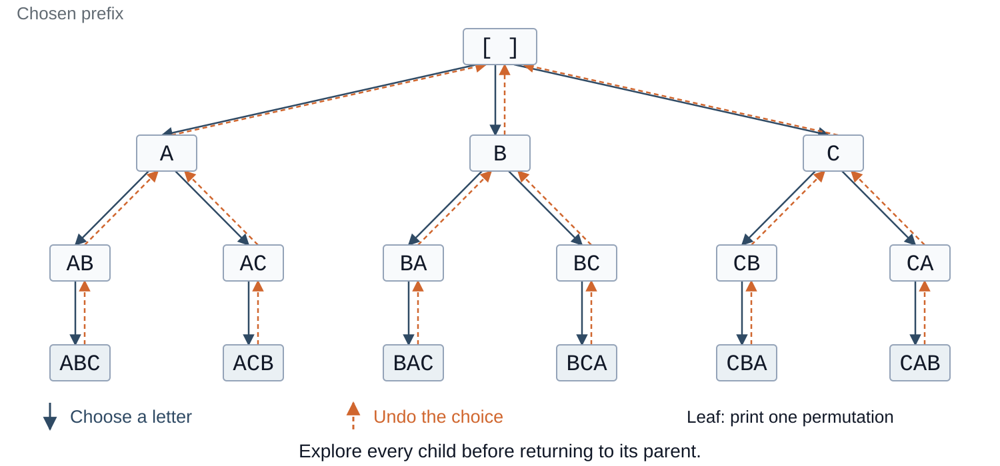
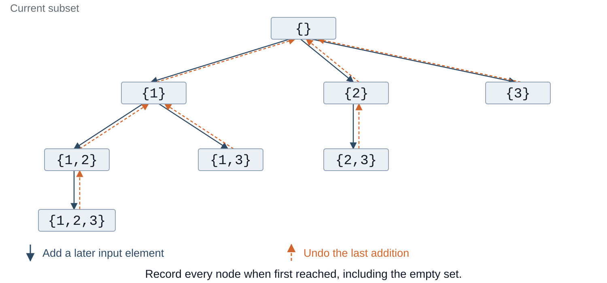
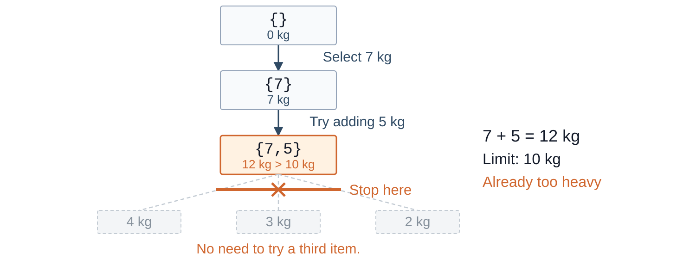
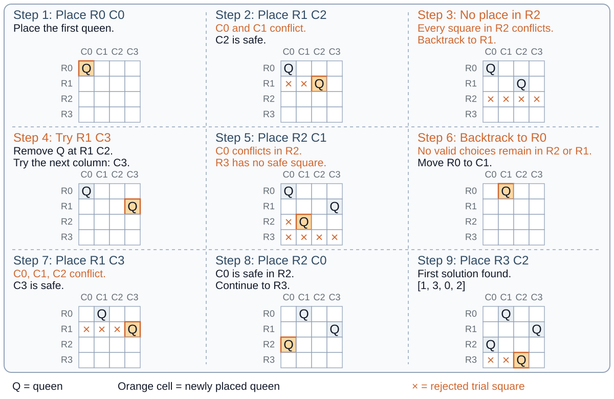

Brute Force and Backtracking
Liting Zhang
University of West Florida
Learning goals
Model a search as a tree of choices.
Generate candidates.
Permutations
Subsets
Fixed-size combinations
Explain how backtracking restores partial solutions.
Identify safe pruning rules.
Analyze search costs.
Running time
Working space
Shopping bag selection
Choose exactly 3 of 5 items for a shopping bag. The total weight must be at most 10 kg. The item weights are {7,5,4,3,2} kg.
A direct method
List every group of three items.
Add the weights in each group.
Keep the groups that fit.
How many groups must the method check?
Can some groups be rejected before they are complete?
What is brute force?
Brute force solves a problem through straightforward checking.
Exhaustive search covers the complete candidate space.
Generate each candidate.
Test each candidate.
Complete enumeration finds every valid answer in a finite search space.
The cost depends on the task.
Scanning an array takes O(n).
Checking every pair takes O(n²).
Advantages and limits
Advantages
A direct algorithm is often easy to implement.
A small exhaustive solver can verify a faster algorithm’s answers.
Limits
The method works best with a small candidate space.
Enumerating a large candidate space can be impractical.
Candidates and search goals
A candidate is a possible answer.
In the shopping bag problem, a candidate is a group of three items.
Find one valid answer.
Stop after the first valid candidate.
Report failure if every candidate fails.
Find all valid answers: record every valid candidate.
Find the best answer.
Keep the best value seen during the search.
A valid answer may still be suboptimal.
What is a permutation?
A permutation is an ordered arrangement of distinct elements.
A full permutation uses every element exactly once.
Each position has one fewer unused element available.
The number of full permutations is n!.
n! = n × (n − 1) × ⋯ × 1
0! = 1
For A, B, and C, 3! = 3 × 2 × 1 = 6.
A permutation decision tree

Choose, explore, undo
search(state):
if state is complete:
process(state)
return
for each available choice:
apply(choice)
search(updated state)
undo(choice)A search path represents a sequence of decisions.
Depth-first search explores one active path at a time.
Backtracking restores the partial solution between branches.
Recursive permutation algorithm
void permute(string& s, size_t start) {
if (start == s.size()) { cout << s << '\n'; return; }
for (size_t i = start; i < s.size(); ++i) {
swap(s[start], s[i]); // choose
permute(s, start + 1); // explore
swap(s[start], s[i]); // undo
}
}Each recursion level fixes one position.
Each branch must restore its starting arrangement.
swapexchanges two characters.
Subsets of every size
A subset can contain any number of elements from 0 through n.
Order does not matter: {1,2} and {2,1} are the same subset.
Each element has two possible membership states.
Present in the subset.
Absent from the subset.
There are 2n subsets.
For {1,2,3}: {}, {1}, {2}, {3}, {1,2}, {1,3}, {2,3}, {1,2,3}.
The empty set is a subset.
Every partial selection is already a valid subset.
Generating subsets: add and undo

Generating subsets without duplicates
| Selected elements | Elements still eligible |
|---|---|
| {} | 1, 2, 3 |
| {1} | 2, 3 |
| {1,2} | 3 |
| {1,3} | None |
Each new element comes later in the input order.
Every subset has one increasing-order representation.
A branch ends when no later element remains.
Recursive subset algorithm
void subsets(const vector<int>& items,
vector<int>& current, size_t index) {
print(current);
for (size_t i = index; i < items.size(); ++i) {
current.push_back(items[i]);
subsets(items, current, i + 1);
current.pop_back();
}
}print(current)runs at every call because every node is a valid subset.printis a helper that displays one candidate.
Increasing input order prevents reordered copies.
Candidate operations
push_backappends an element.pop_backremoves the last element.
What is a combination?
A combination of size k is a subset with exactly k elements.
From {1,2,3}, choose exactly 2 elements.
| Selection size | Subsets of {1,2,3} | Keep when k = 2? |
|---|---|---|
| 0 | {} | No |
| 1 | {1}, {2}, {3} | No |
| 2 | {1,2}, {1,3}, {2,3} | Yes |
| 3 | {1,2,3} | No |
All subsets include all sizes: 2³ = 8 selections.
Size-2 combinations include only the three pairs: C(3,2) = 3.
Order does not matter in either task.
The general count is C(n,k) = n! / (k! × (n − k)!).
The selection size satisfies 0 ≤ k ≤ n.
Generating combinations of exactly k elements
A partial candidate can contain fewer than k elements.
For k = 2, {1} is still being built.
Record only selections containing exactly k elements.
For k = 2, {1,2} is an answer.
Stop extending a selection when its size reaches k.
Each added element comes from a later input position.
A branch that cannot reach k produces no answer.
Recursive combination algorithm
void combinations(const vector<int>& items,
vector<int>& current, size_t index, size_t k) {
if (current.size() == k) { print(current); return; }
for (size_t i = index; i < items.size(); ++i) {
current.push_back(items[i]);
combinations(items, current, i + 1, k);
current.pop_back();
}
}Only selections of size k are answers.
Increasing input order gives one path per combination.
size()returns the number of elements in a vector.
Shopping bag combinations
Choose exactly 3 items with total weight at most 10 kg. The item weights, in input order, are {7,5,4,3,2} kg.
| Example candidate | Total weight | Fits? |
|---|---|---|
| {4,3,2} | 9 kg | Yes |
| {5,3,2} | 10 kg | Yes |
| {5,4,2} | 11 kg | No |
The combination search with k = 3 generates C(5,3) = 10 complete candidates.
Exactly two candidates satisfy the weight limit.
Permutations, combinations, and subsets
| Property | Permutation | Combination | Subset |
|---|---|---|---|
| Order matters? | Yes | No | No |
| Number selected | k | Exactly k | Any size from 0 through n |
| Count | P(n,k) | C(n,k) | 2n |
| From {1,2,3} | 6 orderings of 2 elements | 3 selections of 2 elements | 8 selections of all sizes |
Choosing and arranging k distinct elements gives P(n,k) = n! / (n − k)!.
Each k-element group has k! different orderings.
Dividing P(n,k) by k! gives C(n,k).
Adding a constraint check
Backtracking restores state between branches.
Pruning skips a branch with no valid completion.
Reject an invalid choice before making a recursive call.
An overweight partial bag can be pruned.
All item weights are positive.
Adding an item increases the total weight.
A pruning rule must preserve every valid answer.
Pruning before the third item

Backtracking with constraints
search(state):
if state is complete:
record(state)
return
for each available choice:
if choice passes the constraint check:
apply(choice)
search(updated state)
undo(choice)Constraint checks apply to partial solutions.
A partial solution can pass its current checks and still reach a dead end.
A sound rejection rule preserves every valid solution.
Pruning the shopping bag search
void bags(const vector<int>& w, vector<int>& current,
size_t index, int total) {
if (current.size() == 3) { print(current); return; }
for (size_t i = index; i < w.size(); ++i) {
if (total + w[i] > 10) continue; // prune
current.push_back(w[i]);
bags(w, current, i + 1, total + w[i]);
current.pop_back();
}
}The weight limit applies to partial selections.
A partial sum tracks the candidate’s weight.
This input needs 16 calls with the check and 26 calls without it.
The N-Queens problem
Place N nonattacking queens on an N × N board.
Queens attack along:
Rows
Columns
Diagonals
Use one queen per row.
Row conflicts are impossible.
Allowing any column in each row gives NN complete assignments.
Reject attacking placements before recursing.
Representing a partial board
| Row | Chosen column |
|---|---|
| 0 | 0 |
| 1 | 2 |
| 2 | Unfilled |
| 3 | Unfilled |
A column list represents the board with one entry per row.
Already placed queens must remain nonattacking.
A proposed square conflicts with a placed queen when:
Their column numbers are equal.
Their absolute row and column differences are equal.
4-Queens: finding the first solution

N-Queens: the safety check
bool isSafe(const vector<int>& queens, int row, int col) {
for (int r = 0; r < row; ++r) {
int c = queens[r];
if (c == col) return false;
if (abs(r - row) == abs(c - col)) return false;
}
return true;
}A proposed queen must avoid every already placed queen.
absreturns the absolute value of a number.The worst-case cost of one safety check is O(N).
N-Queens: recursive search
void solve(vector<int>& queens, int row, int n) {
if (row == n) { printBoard(queens); return; }
for (int col = 0; col < n; ++col) {
if (!isSafe(queens, row, col)) continue;
queens[row] = col;
solve(queens, row + 1, n);
queens[row] = -1;
}
}Only nonattacking partial boards are extended.
A complete nonattacking board is a solution.
Restoring a placement preserves alternative branches.
What does the 8-Queens search count?
| Measurement | Count for N = 8 |
|---|---|
| Complete assignments with one queen per row | 88 = 16,777,216 |
| Candidate placements tested | 15,720 |
| Search states visited, including the empty board | 2,057 |
| Complete solutions recorded | 92 |
Full boards, attempted placements, visited states, and solutions are different units.
Counting assumptions
The search records every solution.
The search uses no symmetry reduction.
Candidate counts and output costs
Printing all arrangements of ABC writes 6 × 3 = 18 letters. In general, full permutation output has n! candidates with n letters each.
| Output task | Outputs | Work to print all outputs |
|---|---|---|
| Full permutations | n! | O(n × n!) |
| All subsets | 2n | O(n × 2n) |
| Combinations of size k | C(n,k) | O(k × C(n,k)) |
Assumptions
Printing one element takes constant time.
The combination bound needs k ≥ 1. For k = 0, the one empty combination prints in constant time.
Total running time = generating + constraint checking + printing.
Printing dominates in two of the generators.
permuteruns in O(n × n!) time.subsetsruns in O(n × 2n) time.
combinationscan take longer than its printing cost: it visits some prefixes that never reach size k.
How quickly do the counts grow?
| n | n! | 2n |
|---|---|---|
| 10 | 3,628,800 | 1,024 |
| 15 | 1,307,674,368,000 | 32,768 |
| 20 | ≈ 2.43 × 1018 | 1,048,576 |
| 30 | ≈ 2.65 × 1032 | 1,073,741,824 |
At a hypothetical rate of one million checks per second, 15! checks take about 15 days.
Actual running time also depends on:
The work per candidate
Output costs
Estimate the work for the actual input.
Measure the actual implementation.
Working space and stored output
Depth-first search keeps one active path.
Working space
Permutations: O(n)
Subsets: O(n)
Combinations: O(k)
N-Queens: O(N)
Additional space for storing every result
Permutations: Θ(n × n!)
Subsets: Θ(n × 2n)
Printing each result immediately avoids storing the full output.
The cost of pruning
Each constraint check takes time.
A rejected branch can save an entire subtree’s work.
Pruning effectiveness depends on:
How early a branch is rejected
How many branches are rejected
With no rejected choices, the search may visit every candidate.
Pruning can improve a worst-case bound.
An exponential or factorial worst case may remain.
Printing subsets and combinations
void print(const vector<int>& values) {
cout << "{ ";
for (int x : values) cout << x << ' ';
cout << "}\n";
}coutwrites values to the output stream.Printing candidates immediately avoids retaining the full output.
Printing and starting N-Queens
void printBoard(const vector<int>& queens) {
for (size_t r = 0; r < queens.size(); ++r) {
for (size_t c = 0; c < queens.size(); ++c)
cout << (queens[r] == int(c) ? "Q " : ". ");
cout << '\n';
}
cout << '\n';
}The vector needs one entry per board row.
For a 4 × 4 board:
vector<int> queens(4, -1);solve(queens, 0, 4);
Feasibility of a partial combination
A partial selection is useful only if it can still reach size k.
If r elements have been chosen:
The selection still needs t = k − r elements.
A next choice at index i needs i ≤ n − t.
For 5 elements and k = 3:
The first choice can use index 0, 1, or 2.
Starting at index 3 leaves only two elements available.
That branch cannot reach size 3.
Combination search with pruning
void combinationsPruned(const vector<int>& items,
vector<int>& current, size_t index, size_t k) {
if (current.size() == k) { print(current); return; }
size_t last = items.size() - (k - current.size());
for (size_t i = index; i <= last; ++i) {
current.push_back(items[i]);
combinationsPruned(items, current, i + 1, k);
current.pop_back();
}
}Every explored prefix can reach size k.
For k ≥ 1, total time including output is O(k × C(n,k)).
N-Queens counts and running time
One queen per row gives NN complete assignments.
Checking all queen pairs on each of those boards takes O(N² × NN) total time.
Column checks require distinct chosen columns.
At most N! complete arrangements satisfy that requirement.
The solve function checks partial boards during the search.
An upper bound for solve, including board printing, is O(N² × N!).
Pruning may reduce the actual work.
Other backtracking applications
Sudoku
Try a digit in an empty cell.
Reject digits that violate row, column, or box constraints.
Maze paths
Try a neighboring cell.
Reject walls.
Reject cells already on the current path.
Word search
Extend the path only when the next character matches.
Graph coloring
Reject a color used by an adjacent colored vertex.